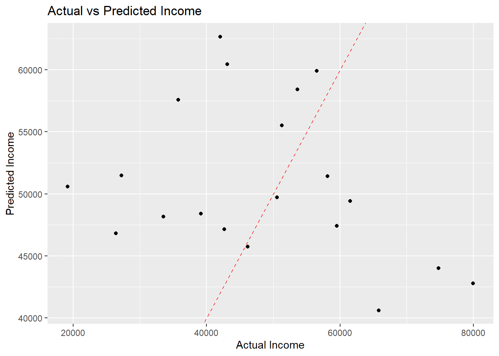
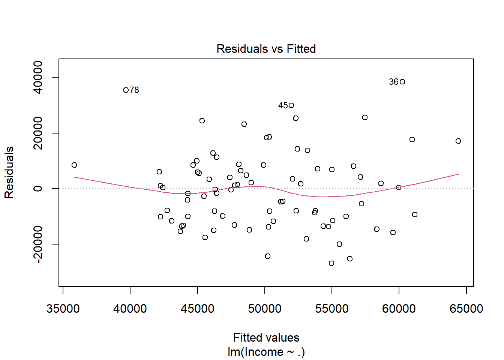
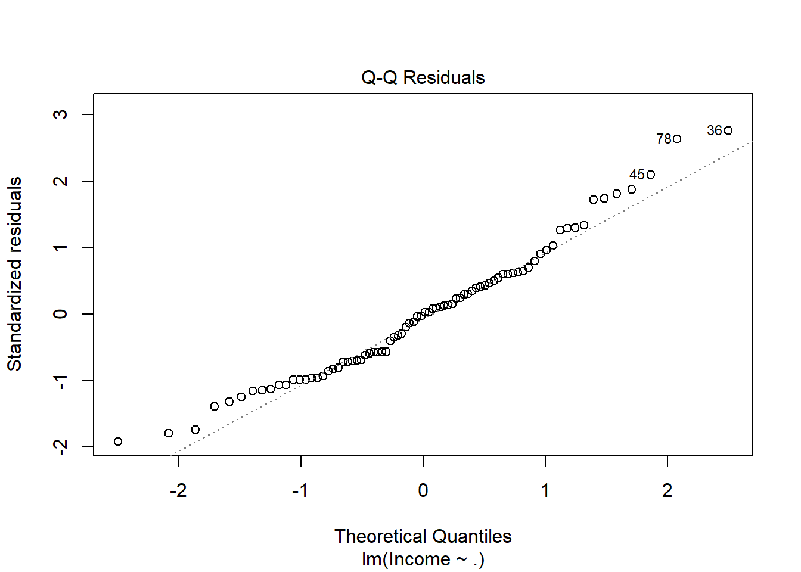
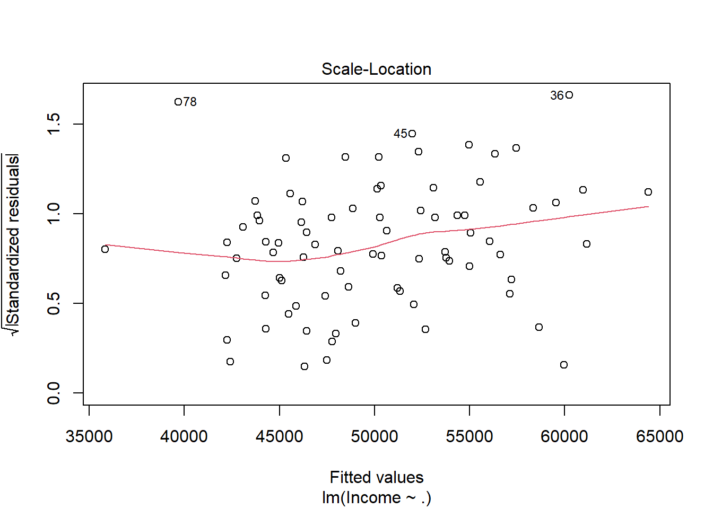
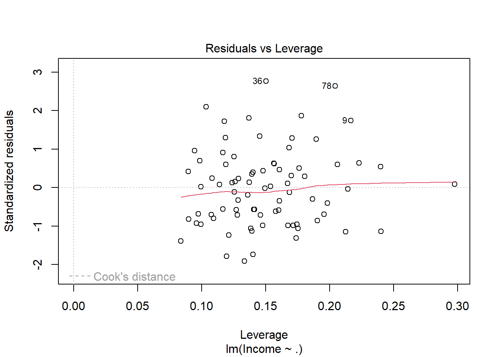

Comprehensive demonstartion of R prgramming language through a randomly generated dataset.
news
code
analysis
plotly
plot
Author
Sreekanya Peddireddi
Published
December 13, 2023
INTRODUCTION
We are going to explore R programming language as skill attained over time as i have learnt and understood it. In this project an going to generate a random data set of 100 multiple and different labeling and in turn conduct a simple data arrangement sorting cleaning EDA (exploratory data analysis) and a linear regression model with proper visualization and accuracy measures telemeters.
RANDOM DATASET
library(dplyr)
Attaching package: 'dplyr'
The following objects are masked from 'package:stats':
filter, lag
The following objects are masked from 'package:base':
intersect, setdiff, setequal, union
library(tidyr)library(kableExtra)
Attaching package: 'kableExtra'
The following object is masked from 'package:dplyr':
group_rows
Due to the size we will just conduct a few exploratory analysis without going into detail but we will demonstrate the relationship between the product bought and the type of people whom bought it and their education level.
library(dplyr)library(tidyr)# Summary statistics by Education Level for Product A and Product Bsummary_stats <- data %>%group_by(Education_Level) %>%summarise(Mean_Product_A =mean(Product_A),Mean_Product_B =mean(Product_B),Median_Product_A =median(Product_A),Median_Product_B =median(Product_B),Total_Product_A =sum(Product_A),Total_Product_B =sum(Product_B) )print(summary_stats)
library(ggplot2)# Visualizing Product A and Product B purchases by Education Levelpurchase_plot <- data %>%gather(Product, Purchases, Product_A, Product_B) %>%ggplot(aes(x = Education_Level, y = Purchases, fill = Product)) +geom_boxplot() +labs(title ="Product A and Product B Purchases by Education Level",x ="Education Level",y ="Number of Purchases" ) +scale_fill_manual(values =c("Product_A"="blue", "Product_B"="green")) +theme_minimal()print(purchase_plot)
set.seed(123)# Assuming 'Income' is the target variable, creating predictors (X) and target variable (y)X <- data %>%select(-ID, -Income)y <- data$Income# Splitting the data into training and testing sets (80% training, 20% testing)train_index <-createDataPartition(y, p =0.8, list =FALSE)train_data <- data[train_index, ]test_data <- data[-train_index, ]
# Load the necessary librarylibrary(lmtest)
Loading required package: zoo
Attaching package: 'zoo'
The following objects are masked from 'package:base':
as.Date, as.Date.numeric
# Fit a linear regression modellm_model <-lm(Income ~ ., data = train_data)# Summary of the modelsummary(lm_model)
Call:
lm(formula = Income ~ ., data = train_data)
Residuals:
Min 1Q Median 3Q Max
-26873 -10378 25 8158 38371
Coefficients:
Estimate Std. Error t value Pr(>|t|)
(Intercept) 66128.71 11763.16 5.622 3.84e-07 ***
ID -8.06 63.92 -0.126 0.9000
Age -83.52 159.98 -0.522 0.6033
GenderMale 8207.19 3662.38 2.241 0.0283 *
Education_LevelHigh School -5147.42 5075.71 -1.014 0.3141
Education_LevelMaster's 5432.97 5946.04 0.914 0.3641
Education_LevelPhD -1400.37 4793.47 -0.292 0.7711
RegionNorth -8155.90 5624.61 -1.450 0.1516
RegionSouth -4549.72 4943.93 -0.920 0.3607
RegionWest -1352.63 4684.63 -0.289 0.7737
Product_A -295.84 657.16 -0.450 0.6540
Product_B -626.64 510.97 -1.226 0.2243
---
Signif. codes: 0 '***' 0.001 '**' 0.01 '*' 0.05 '.' 0.1 ' ' 1
Residual standard error: 15060 on 68 degrees of freedom
Multiple R-squared: 0.1438, Adjusted R-squared: 0.005288
F-statistic: 1.038 on 11 and 68 DF, p-value: 0.4237
# Making predictions on the test setpredictions <-predict(lm_model, newdata = test_data)# Calculate model performance metrics (e.g., RMSE, R-squared)rmse <-sqrt(mean((test_data$Income - predictions)^2))rsquared <-summary(lm_model)$r.squaredcat("Root Mean Squared Error (RMSE):", rmse, "\n")
Root Mean Squared Error (RMSE): 18523.96
cat("R-squared:", rsquared, "\n")
R-squared: 0.1437925
# Plotting actual vs predicted valueslibrary(ggplot2)# Creating a data frame with actual and predicted valuesresults <-data.frame(Actual = test_data$Income, Predicted = predictions)# Scatterplotggplot(results, aes(x = Actual, y = Predicted)) +geom_point() +geom_abline(intercept =0, slope =1, color ="red", linetype ="dashed") +labs(title ="Actual vs Predicted Income", x ="Actual Income", y ="Predicted Income")

# Diagnostic plots for linear regressionplot(lm_model)




RESULTS AND DISCUSSIONS
The regression analysis aimed to examine the factors influencing the dependent variable, presumably a monetary measure. The model included various independent variables such as ID, Age, Gender, Education Level, Region, and Product type. The coefficients of the model indicate the estimated impact of each variable on the outcome. The results indicate that most coefficients lack statistical significance in predicting the dependent variable, as evident from their high p-values. Notably, Gender (specifically being Male) exhibited a statistically significant positive relationship with the outcome, suggesting that males tend to have a higher value in the dependent variable compared to females. However, caution is advised in interpreting this result due to the limited significance of other variables in the model. Moreover, variables such as Education Level, Region, and Product type did not show substantial influence on the dependent variable, as their coefficients were not statistically significant. The overall model fit is weak, with an adjusted R-squared of 0.005288, indicating that the independent variables collectively explain only a small proportion of the variability in the dependent variable.
CONCLUSION
In conclusion, based on this analysis, the model does not adequately explain the variations in the dependent variable using the selected independent variables. Further investigation or refinement of the model by considering additional relevant factors or improving the dataset might be necessary to achieve a more accurate understanding of the factors affecting the outcome variable.